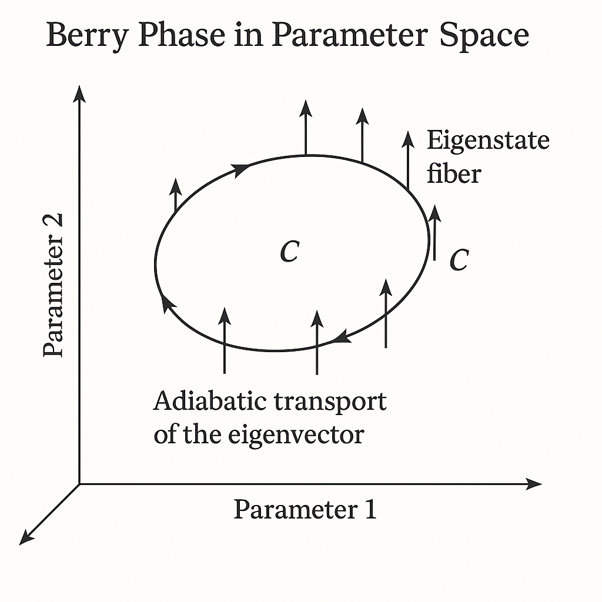
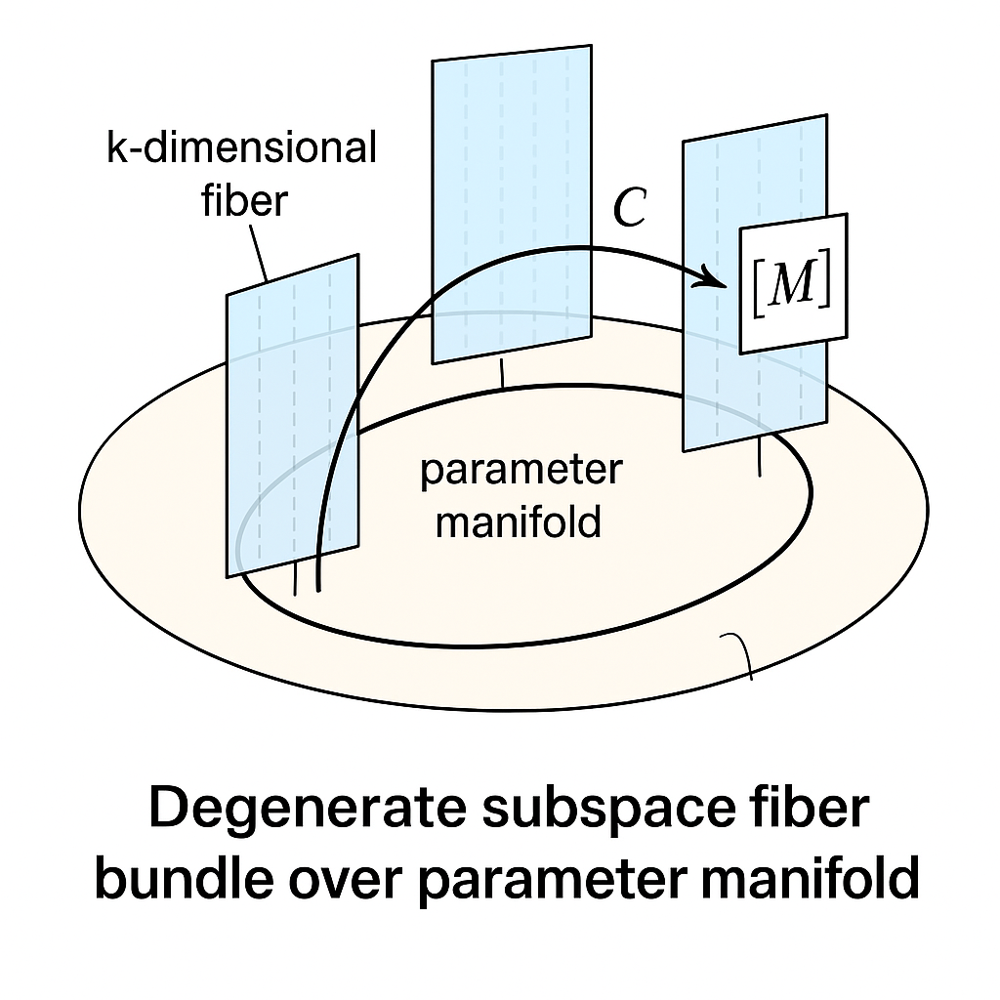
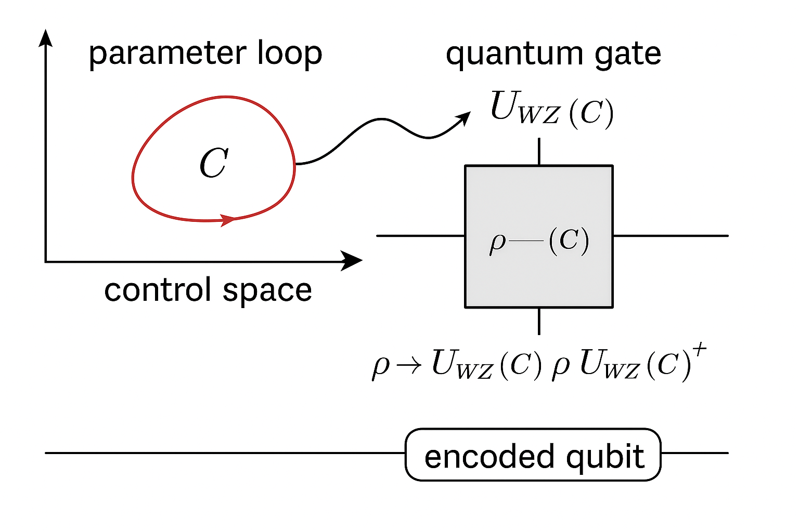
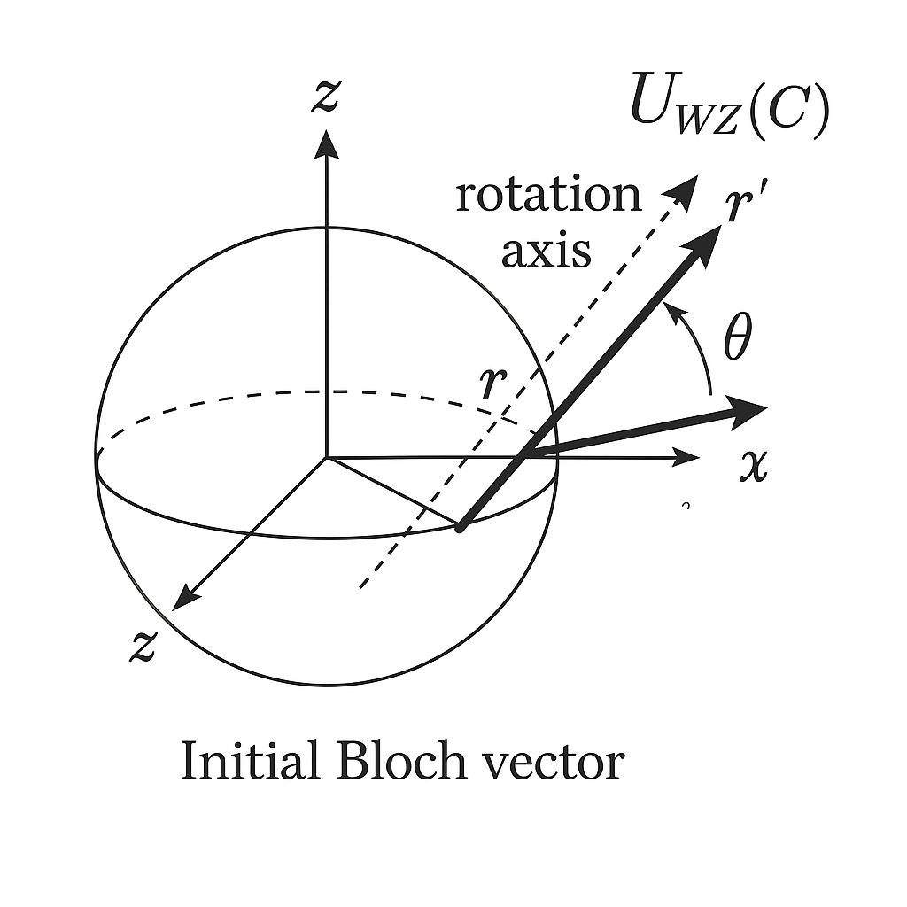
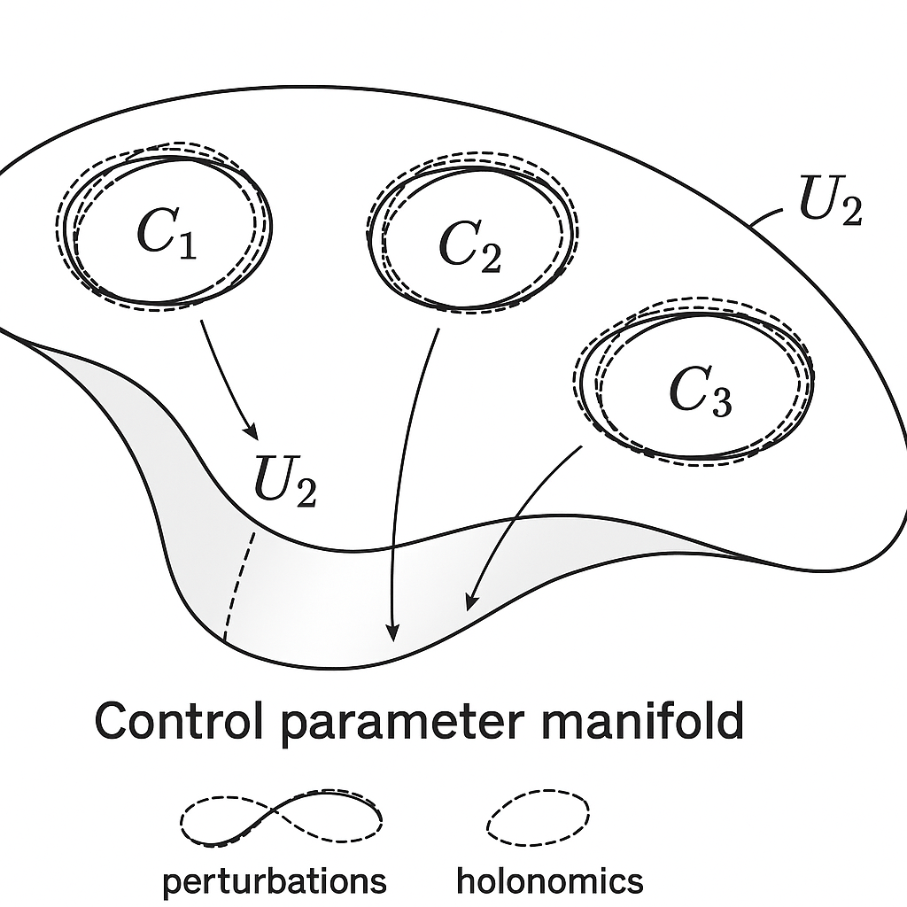
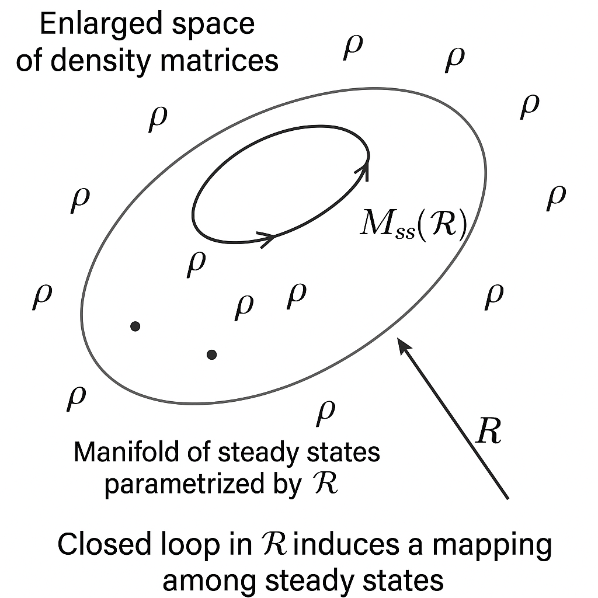
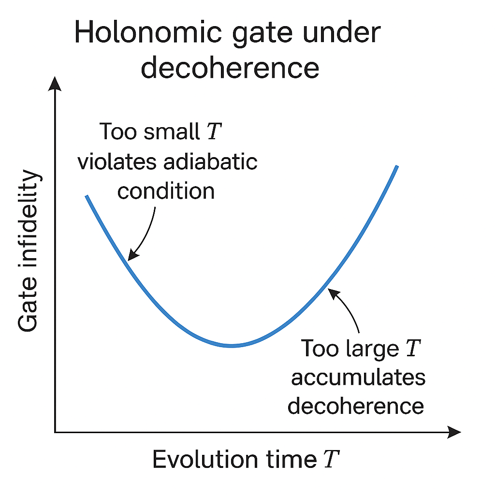
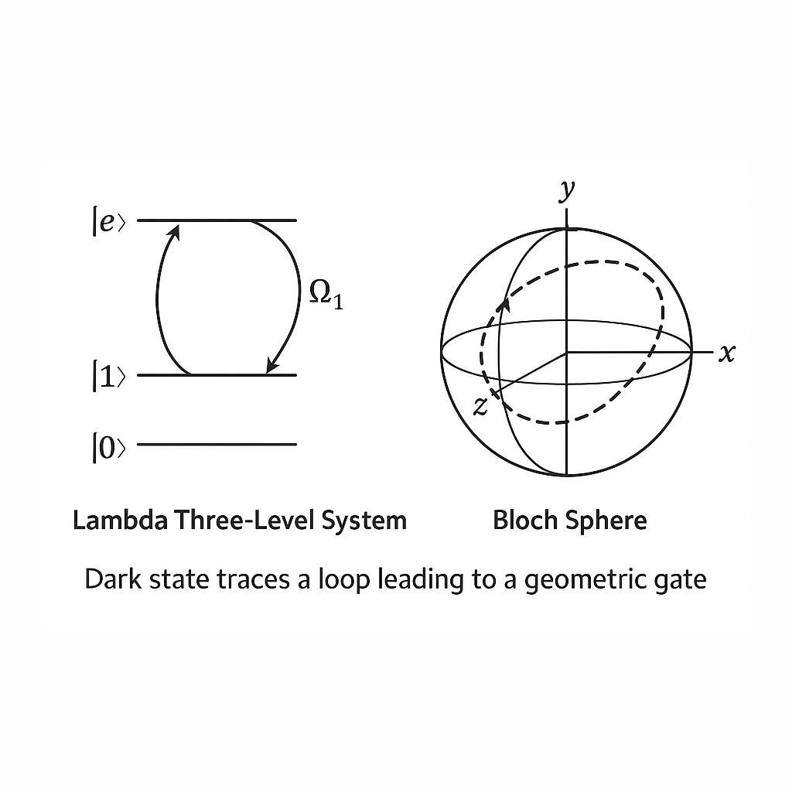
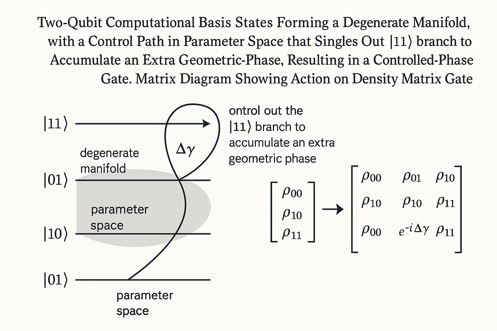
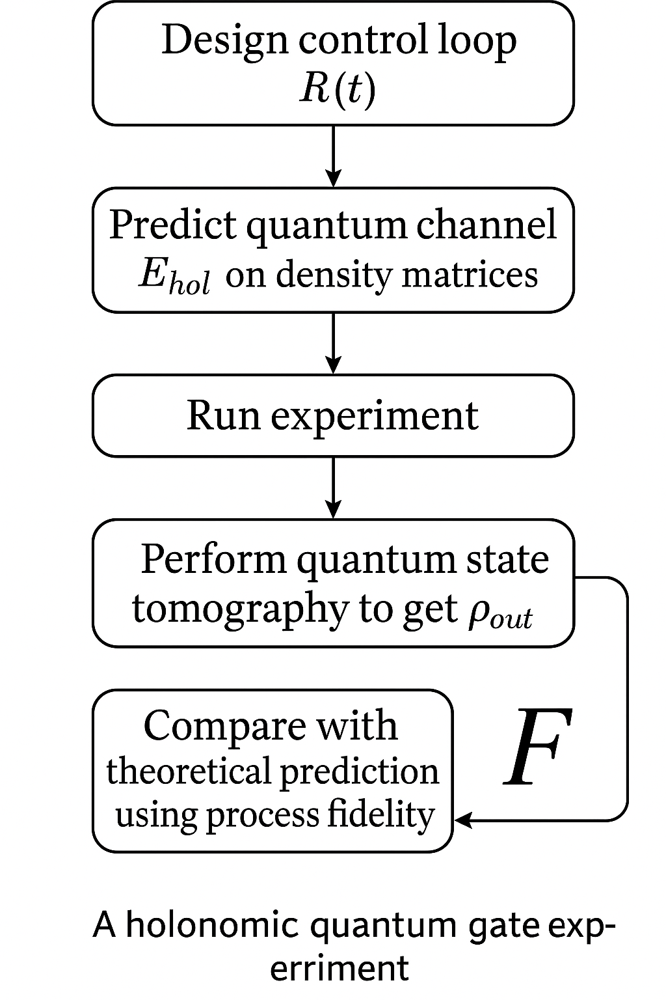

Generated by ChatGPT on 2025-12-16
逐字稿下載：ChatGPT_zh_L03_第_3_講_Density_matrix_Holonomic_Quantum_Computation.txt
完整音檔：
Segment 1:
Segment 2:
Segment 3:
Segment 4:
Segment 5:
Segment 6:
Segment 7:
Segment 8:
Segment 9:
Segment 10:
Segment 11:
Segment 12:
Segment 13:
Segment 14:
本講聚焦於「從密度矩陣觀點嚴格建立 Holonomic Quantum Computation（HQC）」。 我們將從 Berry phase 與幾何相位的基本概念出發，推廣到非阿貝爾幾何相位與束（bundle）結構，再在密度矩陣框架中重建 Holonomic gate 的數學結構，最後說明其在開放系統與退相干下的延伸與限制。
考慮一個參數依賴的哈密頓量 \(H(\boldsymbol{R})\)，其中 \(\boldsymbol{R}\in \mathcal{M}\) 是某個參數空間（manifold）上的點，假設 \(H(\boldsymbol{R})\) 具有非簡併本徵態 \(\{|n(\boldsymbol{R})\rangle\}\) 與本徵值 \(E_n(\boldsymbol{R})\)，滿足 \[ H(\boldsymbol{R})\,|n(\boldsymbol{R})\rangle = E_n(\boldsymbol{R})\,|n(\boldsymbol{R})\rangle. \] 在 adiabatic 條件下，若系統初態為 \[ |\psi(0)\rangle = |n(\boldsymbol{R}(0))\rangle, \] 且參數 \(\boldsymbol{R}(t)\) 緩慢地 沿一條封閉路徑 \(C\subset \mathcal{M}\) 演化： \[ \boldsymbol{R}(T) = \boldsymbol{R}(0), \quad C: t\in[0,T]\mapsto \boldsymbol{R}(t), \] 則終態可寫為 \[ |\psi(T)\rangle = e^{i\gamma_n(C)} e^{-\frac{i}{\hbar}\int_0^T E_n(\boldsymbol{R}(t'))dt'} |n(\boldsymbol{R}(0))\rangle, \] 其中 \[ \gamma_n(C) = i\oint_C \langle n(\boldsymbol{R})|\nabla_{\boldsymbol{R}} n(\boldsymbol{R})\rangle\cdot d\boldsymbol{R} \] 是 Berry phase。這是純態波函數的標準表述。
然而，對於 混合態 或 開放系統，或當我們只關心可觀測的期望值時，密度矩陣 \(\rho\) 的語言更自然。

在封閉量子系統中，密度矩陣隨時間的演化由 von Neumann 方程給出： \[ \frac{d\rho(t)}{dt} = -\frac{i}{\hbar}[H(\boldsymbol{R}(t)), \rho(t)]. \] 若初態為純態投影： \[ \rho(0) = |n(\boldsymbol{R}(0))\rangle\langle n(\boldsymbol{R}(0))|, \] 在完美 adiabatic 情況下，\(\rho(t)\) 一直保持在瞬時本徵投影： \[ \rho(t) = |n(\boldsymbol{R}(t))\rangle\langle n(\boldsymbol{R}(t))|. \] 注意：由於動力學相位與幾何相位皆為整體相位，在密度矩陣中完全消失： \[ \rho(t) = e^{i\phi(t)}|n(\boldsymbol{R}(t))\rangle\langle n(\boldsymbol{R}(t))|e^{-i\phi(t)} = |n(\boldsymbol{R}(t))\rangle\langle n(\boldsymbol{R}(t))|. \] 因此，對單一非簡併能階而言，Berry phase 在密度矩陣層級是不可見的，因為相位 \(\gamma_n(C)\) 僅在波函數層級出現。
然而，當我們考慮：
幾何相位將以更高階結構（如 superoperator 或 非阿貝爾幾何 holonomy）表現出來，這正是密度矩陣 Holonomic Quantum Computation 的核心。
在密度矩陣框架中，一般的演化可視為一個 CPTP（完全正且保跡）映射： \[ \rho \mapsto \mathcal{E}(\rho). \] 對於閉系統的酉演化 \(U\)，此映射為 \[ \mathcal{E}(\rho) = U \rho U^\dagger. \] 若 \(U\) 具有幾何起源（例如 Berry phase 或其非阿貝爾推廣 Wilczek–Zee holonomy），則 \[ U = \mathcal{P}\exp\left(-\oint_C A(\boldsymbol{R})\cdot d\boldsymbol{R}\right), \] 其中 \(A(\boldsymbol{R})\) 為 Berry 連接 或其非阿貝爾推廣。此時幾何結構不僅存在於態空間，也存在於「量子通道空間」。 更進一步，若存在退相干，演化變為 Lindblad 型超算子： \[ \frac{d\rho}{dt} = \mathcal{L}_{\boldsymbol{R}(t)}(\rho), \] 其中 \(\mathcal{L}_{\boldsymbol{R}}\) 是 Lindbladian，亦可對參數 \(\boldsymbol{R}\) 的 adiabatic 變化進行幾何分析，導致 open-system geometric phase 的概念。
Holonomic Quantum Computation (HQC) 的核心是 非阿貝爾幾何相位。假設哈密頓量 \(H(\boldsymbol{R})\) 具有一個 \(k\)-重簡併本徵空間，能量 \(E_0(\boldsymbol{R})\) 在某個能隙 \(\Delta\) 下與其他能階分離： \[ H(\boldsymbol{R})|\phi_a(\boldsymbol{R})\rangle = E_0(\boldsymbol{R})|\phi_a(\boldsymbol{R})\rangle,\quad a=1,\dots,k. \] 令 \[ \mathcal{H}_0(\boldsymbol{R}) = \mathrm{span}\{|\phi_a(\boldsymbol{R})\rangle\}_{a=1}^k \] 為該簡併子空間。若系統初態在這個子空間中，且 \(\boldsymbol{R}(t)\) 緩慢變化且保持能隙，adiabatic theorem 的退簡併版（Wilczek–Zee）指出：態在 \(\mathcal{H}_0\) 中保持，但會受到一個 非阿貝爾酉變換： \[ |\psi(T)\rangle = e^{-\frac{i}{\hbar}\int_0^T E_0(\boldsymbol{R}(t'))dt'}\, U_{\mathrm{WZ}}(C)\,|\psi(0)\rangle, \] 其中 \(U_{\mathrm{WZ}}(C)\) 等於，路径排序的指數，裡面是一個負號，乘上沿著路徑 \(C\) 的線積分，\(A\) 括號粗體的 \(R\)，跟微小的粗體 \(R\) 做內積。-->\[ U_{\mathrm{WZ}}(C) = \mathcal{P}\exp\left(-\oint_C A(\boldsymbol{R})\cdot d\boldsymbol{R}\right), \] \(\mathcal{P}\) 為路徑排序符號，\(A(\boldsymbol{R})\) 是一個 \(k\times k\) 的矩陣值連接（gauge potential）： \[ \big[A_\mu(\boldsymbol{R})\big]_{ab} = \langle \phi_a(\boldsymbol{R})|\partial_\mu \phi_b(\boldsymbol{R})\rangle,\quad \partial_\mu \equiv \frac{\partial}{\partial R^\mu}. \] 這個 \(U_{\mathrm{WZ}}(C)\) 就是 幾何 holonomy，構成 holonomic gate 的基礎。

在純態圖像中，非阿貝爾幾何相位可從 向量束 (vector bundle) 與 聯絡 (connection) 的角度理解：
在密度矩陣圖像中，可以進一步理解為：
此時，幾何結構不僅在向量束上，也可視為在「operator bundle」或「density matrix bundle」上：對於每個 \(\boldsymbol{R}\)，我們有作用在 \(\mathcal{H}_0(\boldsymbol{R})\) 的算符空間 \(\mathcal{B}(\mathcal{H}_0(\boldsymbol{R}))\)，其中的態為密度矩陣。聯絡可升級為作用在算符空間的「超聯絡 (superconnection)」： \[ \mathcal{A}_\mu(\rho) = A_\mu \rho - \rho A_\mu, \] 曲率則類似由 \(\mathcal{F}_{\mu\nu} = [D_\mu, D_\nu]\) 所給定，其中 \(D_\mu = \partial_\mu + \mathcal{A}_\mu\)。
HQC 的基本策略是：
在密度矩陣框架中，每個 holonomic gate 實際上是一個「酉量子通道」： \[ \mathcal{E}_j : \rho \mapsto U_j \rho U_j^\dagger. \] 若我們考慮一系列 gate \(U_{j_1}, U_{j_2}, \dots\)，則密度矩陣演化是通道的組合： \[ \rho \mapsto \mathcal{E}_{j_n}\circ \dots \circ \mathcal{E}_{j_1}(\rho). \] 這樣可以清楚地在「量子電路層級」理解 HQC。

考慮總哈密頓量 \(H(\boldsymbol{R}(t))\)，假設存在一個能隙保護的簡併子空間 \(\mathcal{H}_0(\boldsymbol{R})\)，其對應投影算符 \[ P_0(\boldsymbol{R}) = \sum_{a=1}^k |\phi_a(\boldsymbol{R})\rangle\langle \phi_a(\boldsymbol{R})|. \] 假設初始時刻 \[ \rho(0) = P_0(\boldsymbol{R}(0)) \rho(0) P_0(\boldsymbol{R}(0)), \] 即 \(\rho(0)\) 完全支撐於簡併子空間。
在 adiabatic 極限下，可證明： \[ \rho(t) = U_\text{ad}(t)\,\rho(0)\,U_\text{ad}^\dagger(t) + O(1/T), \] 其中 \[ U_\text{ad}(t) = \mathcal{P}\exp\left(-\frac{i}{\hbar}\int_0^t P_0(\boldsymbol{R}(t')) H(\boldsymbol{R}(t'))P_0(\boldsymbol{R}(t'))\,dt' \right)\,\,\tilde{U}_\text{geom}(t), \] \(\tilde{U}_\text{geom}(t)\) 是幾何部分。對於退簡併能階，因為 \(P_0 HP_0 = E_0 P_0\)，動力學部分約化為整體相位，真正作用在子空間內的非平庸結構在於 \(\tilde{U}_\text{geom}(t)\)。藉由適當規範選擇，可將其表示為： \[ \tilde{U}_\text{geom}(t) = \mathcal{P}\exp\left(-\int_0^t A_\mu(\boldsymbol{R}(t')) \dot{R}^\mu(t') dt'\right). \] 因此，對封閉回路 \(C\)： \[ \rho(T) = U_{\mathrm{WZ}}(C)\,\rho(0)\,U_{\mathrm{WZ}}^\dagger(C). \]
在此，整個 HQC 過程完全可以在密度矩陣層級描述，且所有可觀測量的期望值都由此給定： \[ \langle O\rangle_T = \operatorname{Tr}\left(O\,\rho(T)\right) = \operatorname{Tr}\left(U_{\mathrm{WZ}}^\dagger(C) O U_{\mathrm{WZ}}(C)\rho(0)\right). \] 換言之，holonomic gate 即是對可觀測量的「幾何對偶旋轉」。
在純態 Berry phase 中，一個常見的幾何推導是利用「平行運輸條件」： \[ \langle n(\boldsymbol{R}(t))|\dot{n}(\boldsymbol{R}(t))\rangle = 0 \] 來消除動力學相位，保留純幾何相位。對於退簡併情況，類似條件可寫為 \[ \langle \phi_a(\boldsymbol{R}(t))|\dot{\phi}_b(\boldsymbol{R}(t))\rangle = 0 \] 在某種規範中使 Berry 連接 \(A\) 滿足特定規範選擇。這對態向量有直接意義，但對密度矩陣則需經由「算符平行運輸」來表述。
對任意算符 \(X\) 作用於簡併子空間，我們可定義「covariant derivative」： \[ D_\mu X = \partial_\mu X + [A_\mu, X]. \] 此結構的幾何意義在於：若 \(X(\boldsymbol{R})\) 沿參數空間移動，我們要求「平行運輸」條件 \[ D_\mu X(\boldsymbol{R}) = 0 \quad \Rightarrow\quad \partial_\mu X = -[A_\mu, X]. \] 對於密度矩陣 \(\rho(\boldsymbol{R})\) 在簡併子空間內演化，「平行運輸」條件意味著 \[ D_t\rho \equiv \frac{d\rho}{dt} + [A_\mu(\boldsymbol{R}(t))\dot{R}^\mu(t), \rho(t)] = 0. \] 解此方程得到 \[ \rho(t) = U_{\mathrm{WZ}}(t)\,\rho(0)\,U_{\mathrm{WZ}}^\dagger(t), \] 其中 \(U_{\mathrm{WZ}}(t)\) 由前述路徑排序指數給出。這表明「幾何平行運輸條件」在密度矩陣語言下可自然地理解為「受 superconnection 控制的單純酉共軛演化」。
考慮一個最簡單的 HQC toy model：具有兩維簡併子空間（可視為一個邏輯 qubit）。令 \[ \mathcal{H}_0(\boldsymbol{R}) = \mathrm{span}\{|\phi_0(\boldsymbol{R})\rangle, |\phi_1(\boldsymbol{R})\rangle\}. \] 假設 Berry 連接在某個區域內可參數化為 \[ A_\mu(\boldsymbol{R}) = i\vec{a}_\mu(\boldsymbol{R})\cdot \vec{\sigma}, \] 其中 \(\vec{\sigma}=(\sigma_x,\sigma_y,\sigma_z)\) 為 Pauli 矩陣，\(\vec{a}_\mu\) 是三維實向量場。沿參數路徑 \(\boldsymbol{R}(t)\)，holonomy 為 \[ U_{\mathrm{WZ}}(C) = \mathcal{P}\exp\left(-\oint_C i\, \vec{a}_\mu(\boldsymbol{R})\cdot\vec{\sigma}\, dR^\mu\right). \] 若在某些簡化假設下（例如 \(\vec{a}_\mu\) 在路徑上對易），則 \[ U_{\mathrm{WZ}}(C) = \exp\left(-i\,\vec{\theta}_C\cdot \vec{\sigma}\right), \] 其中 \[ \vec{\theta}_C = \oint_C \vec{a}_\mu(\boldsymbol{R})\,dR^\mu. \]
在密度矩陣視角，任意兩能階密度矩陣可寫成 Bloch 向量形式： \[ \rho = \frac{1}{2}\big(\mathbb{I} + \vec{r}\cdot \vec{\sigma}\big), \] 其中 \(\vec{r}\in\mathbb{R}^3\)、\(|\vec{r}|\le 1\)。holonomic gate \(U_{\mathrm{WZ}}(C)\) 對應於 Bloch 球上的旋轉： \[ \rho' = U_{\mathrm{WZ}}(C)\,\rho\,U_{\mathrm{WZ}}^\dagger(C) \quad\Longleftrightarrow\quad \vec{r}' = R_C\,\vec{r}, \] 其中 \(R_C\in SO(3)\) 是由 \(SU(2)\) 元素 \(U_{\mathrm{WZ}}(C)\) 誘導的三維旋轉。這給出一個非常直觀的幾何詮釋：HQC 中每一個 holonomic gate 對應於 Bloch 球上的幾何旋轉，該旋轉角度與軸完全由 Berry 曲率在參數空間中的幾何積分決定。

要設計 HQC，我們在密度矩陣層級要做的第一件事，是選擇一個「邏輯子空間」或「穩定子碼空間」\(\mathcal{H}_\text{L}\)，對應投影算符 \(P_\text{L}\)。
條件可寫為： \[ H(\boldsymbol{R}) P_\text{L}(\boldsymbol{R}) = E_\text{L}(\boldsymbol{R}) P_\text{L}(\boldsymbol{R}), \] 且存在能隙 \(\Delta>0\)： \[ H(\boldsymbol{R}) \ge E_\text{L}(\boldsymbol{R})P_\text{L}(\boldsymbol{R}) + (E_\text{L}(\boldsymbol{R})+\Delta)(\mathbb{I}-P_\text{L}(\boldsymbol{R})). \] 在密度矩陣視角，這保證在 adiabatic 限制下，\(\rho(t)\) 保持在 \(\mathcal{D}(\mathcal{H}_\text{L}(\boldsymbol{R}(t)))\) 內，僅經歷幾何 holonomy。
對於一組控制參數 \(\boldsymbol{R}\)，必須設計出滿足下列條件的控制族：
由於 holonomy 只取決於路徑的「幾何等價類」，即 \[ U_{\mathrm{WZ}}(C) = U_{\mathrm{WZ}}(C'), \] 若 \(C\) 與 \(C'\) 在不穿過曲率奇點的情況下同調（homotopic），HQC 在某種意義上對小形變具有穩健性。 在密度矩陣層級，這意味著：邏輯態的期望值對小的控制誤差相對不敏感，因為引入的誤差對應於通道的微小偏離，與幾何拓撲性質相關。

在 HQC 中，我們希望門僅由幾何效應決定，而動力學相位要麼：
對退簡併子空間而言，即使 \(E_\text{L}(\boldsymbol{R})\) 不是常數，動力學相位也僅給出整體相位因子 \(e^{-\frac{i}{\hbar}\int E_\text{L}dt}\)，在密度矩陣中消失： \[ \rho(t) = e^{-\frac{i}{\hbar}\int E_\text{L}dt}U_{\mathrm{WZ}}(t)\rho(0)U_{\mathrm{WZ}}^\dagger(t)e^{\frac{i}{\hbar}\int E_\text{L}dt} = U_{\mathrm{WZ}}(t)\rho(0)U_{\mathrm{WZ}}^\dagger(t). \] 因此，對密度矩陣而言，退簡併 HQC 天然地提供「純幾何 gate」，不需額外補償動力學相位，這是密度矩陣語言下一個非常重要的優勢與簡化。
真實的量子計算系統不可避免地與環境耦合。開放系統在 Markovian 近似下可由 Lindblad 方程描述： \[ \frac{d\rho}{dt} = \mathcal{L}_{\boldsymbol{R}(t)}(\rho) = -\frac{i}{\hbar}[H(\boldsymbol{R}(t)), \rho] + \sum_\alpha \left(L_\alpha(\boldsymbol{R}(t)) \rho L_\alpha^\dagger(\boldsymbol{R}(t)) - \frac{1}{2}\{L_\alpha^\dagger L_\alpha, \rho\}\right), \] 其中 \(L_\alpha\) 為 Lindblad operator，亦可能依賴控制參數 \(\boldsymbol{R}\)。這裡 \(\mathcal{L}_{\boldsymbol{R}}\) 是一個超算子，作用在算符空間上： \[ \mathcal{L}_{\boldsymbol{R}} : \mathcal{B}(\mathcal{H}) \to \mathcal{B}(\mathcal{H}). \]
若 Lindbladian 具有一個 慢模 / 穩態流形 \(\mathcal{M}_\text{ss}(\boldsymbol{R})\)，例如 \[ \mathcal{L}_{\boldsymbol{R}}\big(\rho_\text{ss}(\boldsymbol{R})\big) = 0, \] 且存在簡併穩態子空間（例如「decoherence-free subspace」），則也可以在 超算子層級 推導一種「開放系統 adiabatic theorem」與幾何 holonomy，這就是所謂的「Lindbladian holonomy」。

在超算子圖像中，我們可以類比先前的向量束結構：
在某些條件（譬如存在慢變 Lindbladian、穩態與次穩態之間有譜隙）下，可以證明：沿參數空間 adiabatic 演化，起始於穩態流形中的密度矩陣在 slow manifold 中被平行運輸，導致一個幾何下的 CPTP 映射： \[ \rho_\text{ss}(0) \mapsto \mathcal{U}_\text{Lind}(C)[\rho_\text{ss}(0)]. \] 這個 \(\mathcal{U}_\text{Lind}(C)\) 一般不是酉，但仍是幾何 holonomy 的一種推廣。 理論與實驗研究指出，在某些「decoherence-free subspace」或「noiseless subsystem」中，該 Lindbladian holonomy 實際上在該子空間上縮約為酉演化，從而可以在存在環境情況下實現「幾何魯棒」的 holonomic gate。
在開放系統下，HQC 的優勢與限制可透過密度矩陣直接分析：
透過密度矩陣模擬，可直接量化 holonomic gate 的保真度： \[ F = \min_{\rho\in\mathcal{D}(\mathcal{H}_\text{L})} \operatorname{Tr}\left(U_\text{ideal}\rho U_\text{ideal}^\dagger \cdot \mathcal{E}_\text{real}(\rho)\right), \] 其中 \(\mathcal{E}_\text{real}\) 是考慮開放系統與控制誤差後的實際通道。這樣的度量在 HQC 設計與實驗實作評估中特別重要。

考慮一個 \(\Lambda\) 型三能階系統： \[ |0\rangle, |1\rangle \quad\text{(邏輯態)},\quad |e\rangle \quad\text{(輔助態)}. \] 哈密頓量可設計為 \[ H(\boldsymbol{R}) = \Omega_0(\boldsymbol{R})|e\rangle\langle 0| + \Omega_1(\boldsymbol{R})|e\rangle\langle 1| + \text{h.c.} + \Delta |e\rangle\langle e|, \] 其中 \(\Omega_0, \Omega_1\) 為雷射耦合（複數），\(\Delta\) 為失諧。適當選擇參數（例如在 two-photon resonance 條件下），系統具有一個 零能量暗態子空間，由下列態張成： \[ |D(\boldsymbol{R})\rangle \propto \Omega_1(\boldsymbol{R})|0\rangle - \Omega_0(\boldsymbol{R})|1\rangle. \] 若將邏輯 qubit 編碼為 \(|0\rangle,|1\rangle\)，而設計路徑使得 \(|D(\boldsymbol{R}(t))\rangle\) 在 \(|0\rangle,|1\rangle\) 空間內掃過不同方向，即可在 adiabatic 條件下實現單 qubit 的 holonomic gate。
在密度矩陣層級，考慮初態 \[ \rho(0) = \rho_\text{L}(0) \in \mathcal{D}(\mathrm{span}\{|0\rangle,|1\rangle\}). \] 透過 adiabatic 消去 \(|e\rangle\)（adiabatic elimination），得到對邏輯子空間的有效幾何超算子： \[ \rho(T) = U_\text{hol}(\mathcal{C})\,\rho(0)\,U_\text{hol}^\dagger(\mathcal{C}), \] 其中 \(\mathcal{C}\) 是在 \((\Omega_0,\Omega_1)\) 參數空間中的封閉路徑。 具體地，令 \[ \Omega_0 = \Omega \cos\frac{\theta}{2},\quad \Omega_1 = \Omega e^{i\varphi}\sin\frac{\theta}{2}, \] 則 \(|D(\boldsymbol{R})\rangle\) 在 \(|0\rangle,|1\rangle\) 基底中的座標變化對應於 Bloch 球上的一條路徑，導致邏輯 qubit Bloch 向量的幾何旋轉，如前述 Bloch 向量圖示。

-|e> and |1>-|e> driven by Rabi frequencies Omega0 and Omega1, plus a Bloch sphere showing how the dark state traces a loop leading to a geometric gate.">為了實現通用量子計算，必須能實作兩體 holonomic gate，例如 controlled-phase gate。可考慮兩個 \(\Lambda\) 型原子耦合至同一腔模，或有某種受控交換互動，使得特定雙體態形成退簡併子空間。舉例而言，可以設計一個四維邏輯空間 \[ \mathcal{H}_\text{L} = \mathrm{span}\{|00\rangle,|01\rangle,|10\rangle,|11\rangle\}, \] 再加上若干輔助態，使得 \[ H(\boldsymbol{R})|\Psi_\alpha(\boldsymbol{R})\rangle = E_0|\Psi_\alpha(\boldsymbol{R})\rangle,\quad \alpha = 1,\dots,4 \] 形成一個四維簡併空間。透過適當設計光場或耦合路徑，可讓 Berry 連接在此四維空間上非對角，從而生成非平凡兩體 holonomy。
在密度矩陣層級，初態為 \[ \rho(0) \in \mathcal{D}(\mathcal{H}_\text{L}), \] 演化後為 \[ \rho(T) = U_{\mathrm{WZ}}^{(2\text{-qubit})}(C)\,\rho(0)\, \big(U_{\mathrm{WZ}}^{(2\text{-qubit})}(C)\big)^\dagger. \] 假設特定路徑 \(C_\text{CP}\) 導致 \[ U_{\mathrm{WZ}}^{(2\text{-qubit})}(C_\text{CP}) = \operatorname{diag}(1,1,1,e^{i\phi}), \] 則這就是一個幾何 controlled-phase gate。這種 gate 的幾何起源在於 \(|11\rangle\) 對應分支在參數空間中的 有效 Berry 曲率 與其他態不同，造成相對幾何相位。
密度矩陣演化清楚地顯示：僅有包含 \(|11\rangle\) 成分的密度矩陣元素會獲得相對相位，例如 \[ \rho_{11,xy} = \langle 11|\rho|xy\rangle \mapsto e^{i\phi}\rho_{11,xy},\quad \rho_{xy,11} \mapsto e^{-i\phi}\rho_{xy,11}, \] 而其他元素不變。這在量子糾纏生成與幾何控制上非常關鍵。

branch to accumulate an extra geometric phase, resulting in a controlled-phase gate. Matrix diagram showing action on density matrix elements.">標準 HQC 依賴 adiabatic 條件，導致運作時間過長。為了縮短閘門時間，提出了非絕熱 Holonomic Quantum Computation (NHQC)。 在 NHQC 中，幾何 gate 不再來自 adiabatic theorem，而是利用 循環演化 與 幾何分解 的想法：
在密度矩陣圖像中，非絕熱 holonomic gate 仍可寫為 \[ \rho(T) = U_\text{NHQC} \rho(0) U_\text{NHQC}^\dagger, \] 其中 \(U_\text{NHQC}\) 由時間序列控制決定，但其結構仍可解釋為某種「在射影空間的幾何路徑」的 holonomy。雖然公式上不再是 adiabatic Berry 連接的曲線積分，但依舊具有幾何不依賴演化速率的性質。然而，在實作與理論分析上，密度矩陣路徑的 closedness 以及動力學相位抵消條件需謹慎處理。
另一個發展方向是將 holonomic gate 與拓撲量子計算結合：
在密度矩陣層級，我們可以統一地將這兩者視為「不同層級上的幾何超算子 holonomy」：
這兩種路徑都導致作用於密度矩陣的幾何（有時是拓撲）superoperator。若能設計出同時具有拓撲保護與幾何魯棒性的邏輯空間，將有望大幅提升量子計算在退相干與雜訊下的穩健性。
針對 HQC 與 Holonomic Quantum Annealing 的實驗與數值研究，多半必須使用密度矩陣或主方程模擬：
密度矩陣在此扮演兩個角色：

在本講中，我們從密度矩陣角度系統性建構了 Holonomic Quantum Computation 的理論框架，重點整理如下：
在後續講次中，我們將以本講的密度矩陣幾何框架為基礎，進一步討論 Holonomic Quantum Annealing，說明如何在量子退火過程中引入幾何 holonomy，以提升對能隙縮小與雜訊的抵抗能力，並與 gate model HQC 建立等價關係。